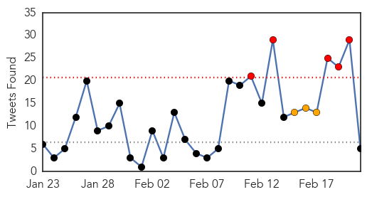

30 Day Trends
Web: 0 alerts, 0 warnings
Twitter: 5 alerts, 3 warnings
Top Articles:
- 1.000
- Ebola Transmission Through Cough Possible, But Not Likely: Experts
- 1.000
- second Australian healthcare worker flown to London after possible contact with deadly virus.
- 0.999
- UN health agency approves rapid test for Ebola as decline in cases appears to level off
- 0.999
- WHO approves rapid test for Ebola
- 0.999
- Liberia Lifts Ebola Curfew, Re-Opens Borders
- 0.999
- Liberia lifts Ebola curfew, re-opens borders
- 0.999
- Sudan Vision Daily
- 0.999
- Indiablooms - First Portal on Digital News Management
- 0.999
- UN health agency approves rapid test for Ebola as decline in cases appears to level off
- 0.998
- Another Ebola healthcare worker back in UK for precautionary monitoring
- 0.997
- No, A New Scientific Report Does Not Say That Ebola Is Now Airborne
- 0.997
- Top priority now is helping over 15,000 survivors who are heroes not outcast
- 0.997
- Liberia lifts Ebola curfews, opens borders
- 0.997
- Liberia to Open Borders as Infection Falls
- 0.996
- Ebola: UN envoy likens final phase of response to ‘looking for needles in haystacks’
- 0.996
- Over 800 health workers infected with Ebola
- 0.995
- Ebola-hit Liberia to reopen borders
- 0.995
- Ebola-hit Liberia to reopen borders
- 0.994
- Ebola crisis: Liberia reopens borders, lifts curfew
- 0.993
- Read Health News & Articles at TheHealthSite.com
- 0.992
- WHO Approves The First 15-Minute Ebola Test : News : News Every Day
- 0.992
- Fifteen-Minute Ebola Test Approved
- 0.990
- March 2, 2015 -- Cuba pledges fight to the end against Ebola in West Africa
- 0.987
- الاخبار المصورة
- 0.987
- Guinean Doctor Survives Ebola, Pays It Forward
- 0.985
- Yorkshire nurse talks of her time on the frontline of Ebola epidemic in West Africa
- 0.983
- The Unreasonable Economic Impact of Viral Fear
- 0.982
- Texas families isolated by Ebola struggled for basics
- 0.981
- WHO-approved 15-minute rapid Ebola test can be game changer
- 0.981
- Liberia lifts nationwide Ebola curfew - Xinhua
- 0.980
- Bill addresses assaults on first responders
- 0.980
- Passport guides visitors through city's African-American history
- 0.980
- Maryland state workers offered payout to leave
- 0.980
- Liberia lifts nationwide Ebola curfew
- 0.977
- Obama to meet Liberian president on Ebola
- 0.975
- supporting Ebola recovery phase across West Africa
- 0.974
- Liberia lifts Ebola curfew, re-opens borders: Presidency
- 0.973
- Liberia lifts Ebola curfew, re-opens borders: presidency
- 0.972
- WHO-approved 15-minute rapid Ebola test can be game changer
- 0.967
- Sierra Leonean President Ernest Koroma lauds UNMEER, commends outgoing crisis manager - Sierra Leone
- 0.961
- WHO-approved 15-minute rapid Ebola test can be game changer
- 0.959
- 15-Minute Ebola Test Approved For Fighting The Epidemic
- 0.958
- WHO Approves First Rapid Test Kit for Ebola
- 0.956
- Liberia to end Ebola curfew, reopen borders, says president
- 0.951
- Chennai's Chinese restaurants whip up fare to welcome Year of the Goat
- 0.951
- Houthi rebels agree to form new government in Yemen
- 0.951
- Sierra Leone News: G7 Co-chair meets with Minister of finance
- 0.951
- Sierra Leone News: MSF closes Kailahun Treatment Centre today
- 0.951
- Sierra Leone News: UTB lands in Mile 91
- 0.951
- Sierra Leone News: iMatrix 101 narrate challenges
Showing top 50 articles...
Top Tweets:
- 0.824
- Have we learned any lessons from this Ebola outbreak? We as persons communities countries organisations health systems and the world.
- 0.670
- RT: Ebola has still not been eradicated & much needs to be done to rebuild Liberia. Read more from: http://t.…
- 0.665
- Ebola crisis: Liberia to reopen borders lift curfew - CNN http://t.co/XmQz9FUkIa ebola EVD
- 0.547
- Leaders of Ebola Fight at UN Express Worry About Eradication - New York Times http://t.co/PIHXCH1Wjd ebola EVD
- 0.529
- RT: MT new low resource Ebola POC test: WHO approves 15-minute Ebola test by Corgenix http://t.co/Ew7oLBK2xw…
Web/News Articles

Tweets
Article Locations

Article Confidences